Specialization
CRISPR & Isothermal
Expertise in advanced molecular detection chemistries for faster, simpler, and accessible diagnostics.
Amplera develops molecular detection technologies for next-generation diagnostics—from CRISPR and isothermal amplification to multiplex real-time PCR and computational assay design. We bring these technologies into partner programs, aligned to your timeline, documentation, and product goals.
Real-time PCR panel validated and transferred to a commercial partner
Per-reaction limit of detection demonstrated in multiplex
Typical timeline for an analytical validation program
Foreground IP generated through your program remains yours.
You are not buying a set of experimental steps. You are building on deep molecular expertise.
Our scientist-led team is supported by advisors across CRISPR, bioinformatics, regulatory strategy, and clinical validation, with one named scientific lead accountable for every program.
Expertise in advanced molecular detection chemistries for faster, simpler, and accessible diagnostics.

Guiding your program from concept and assay development through validation and product transfer.

IP generated specifically through your program remains yours, with ownership defined clearly from the outset.
Amplera works in two ways: developing molecular diagnostics for partners, and building our own diagnostic platforms.
From assay development to validation, regulatory documentation, and technology transfer, we build to your product requirements and timeline.
Your program. Your IP.
For diagnostics companies, manufacturers, pharma, public health programs, and organizations entering India.
See what we deliverDevelopment-stage technology; clinical performance is not yet established.
We are developing a single-workflow molecular test to identify priority bacterial pathogens and resistance genes from a single sample—without a thermal cycler or conventional laboratory infrastructure.
See the platformPartner-funded work and Amplera-funded research remain clearly separated, with ownership defined from the outset.
Five stages. Milestone-driven, with predefined QC acceptance criteria at every stage—so issues are identified early, not at the end.


Regulatory and quality run alongside, from stage 02 through delivery.
Four pathogen targets plus internal amplification control.
One sample. One multiplex reaction.
Limit of detection below 10 copies per reaction.
Foreground IP retained by the client.
A shrimp-health company needed to screen for multiple high-impact pathogens with overlapping clinical signs. We designed a probe-based four-target multiplex real-time PCR assay with an internal amplification control, optimized sample preparation across tissue, soil, and water matrices, and carried the assay through analytical validation.
Have a target, sample type, or diagnostic challenge? Tell us what you’re working on. We’ll respond within one business day with an initial feasibility assessment, a proposed development path, and an indicative timeline.
Looking to advance our CRISPR platform rather than start a development program? Talk to us about partnering
Your science stays confidential. We can work under your NDA or provide ours before any technical discussion.